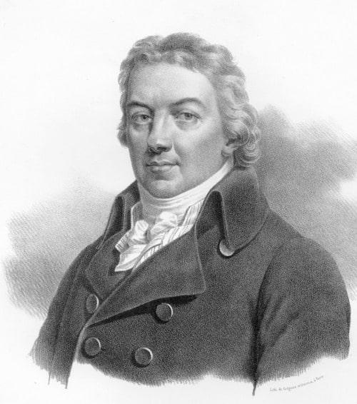

Κάποια στιγμή στα τέλη της δεκαετίας του 1760 ο Edward Jenner, καθώς ακολουθούσε την ειδικότητά του ως χειρουργός, άκουσε μια ιστορία, γνωστή στις επαρχιακές περιοχές ότι οι εργαζόμενοι στην παραγωγή γάλακτος ποτέ δεν νοσούσαν από τη συχνά θανατηφόρα και παραμορφωτική ασθένεια της ευλογιάς καθώς είχαν είδη νοσήσει από την ευλογιά των αγελάδων η οποία έχει πολύ ελαφρά συμπτώματα στον άνθρωπο.
Το 1796 ο Jenner πήρε πύον από το χέρι μιας χωριατοπούλας που έπασχε από ευλογιά των αγελάδων και το εισήγαγε στο χέρι ενός οκτάχρονου αγοριού. Έξι εβδομάδες αργότερα εμβολίασε το παιδί με τον ιό της ευλογιάς και παρατήρησε ότι δεν νόσησε από αυτή. Ο Jenner επέκτεινε τις μελέτες του και το 1798 ανέφερε ότι το εμβόλιο αυτό ήταν ασφαλές για παιδιά αλλά και για ενήλικες και ότι μπορούσε να μεταφερθεί από χέρι σε χέρι, μειώνοντας την εξάρτηση στις αβέβαιες πηγές των μολυσμένων αγελάδων. Καθώς ο εμβολιασμός με τον ιό της ευλογιάς των αγελάδων ήταν πολύ πιο ασφαλής από τον εμβολιασμό με τον ιό της ευλογιάς των ανθρώπων, μια πρακτική ιδιαίτερα εκτεταμένη στην Αγγλία, ο εμβολιασμός με τον ανθρώπινο ιό της ευλογιάς απαγορεύτηκε το 1840. Η δεύτερη γενιά των εμβολίων εισήχθη τη δεκαετία του 1880 από τον Luis Pasteur (Παστέρ), ο οποίος εισήγαγε τα εμβόλια για τη χολέρα των κοτόπουλων και για το βακτήριο του άνθρακα.
Κατά τα τέλη του 19ου αιώνα ο εμβολιασμός θεωρούνταν θέμα εθνικού κύρους και ψηφίστηκαν οι πρώτοι νόμοι υποχρεωτικού εμβολιασμού.